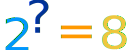
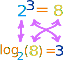
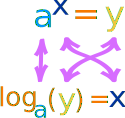
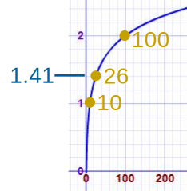

Introduction to Logarithms
In its simplest form, a logarithm answers the question:
How many of one number multiply together to make another number?
Example: How many 2s multiply together to make 8?
Answer: 2 × 2 × 2 = 8, so we had to multiply 3 of the 2s to get 8
So the logarithm is 3
How to Write it
We write it like this:
log2(8) = 3
So these two things are the same:
 |
The number we multiply is called the "base", so we can say:
- "the logarithm of 8 with base 2 is 3"
- or "log base 2 of 8 is 3"
- or "the base-2 log of 8 is 3"
Notice we are dealing with three numbers:
- the base: the number we are multiplying (a "2" in the example above)
- how often to use it in a multiplication (3 times, which is the logarithm)
- The number we want to get (an "8")
More Examples
Example: What is log5(625) ... ?
We are asking "how many 5s need to be multiplied together to get 625?"
5 × 5 × 5 × 5 = 625, so we need 4 of the 5s
Answer: log5(625) = 4
Example: What is log2(64) ... ?
We are asking "how many 2s need to be multiplied together to get 64?"
2 × 2 × 2 × 2 × 2 × 2 = 64, so we need 6 of the 2s
Answer: log2(64) = 6
Exponents
Exponents and Logarithms are related, let's find out how ...
 |
The exponent says how many times to use the number in a multiplication. In this example: 23 = 2 × 2 × 2 = 8 (2 is used 3 times in a multiplication to get 8) |
So a logarithm answers a question like this:

In this way:

The logarithm tells us what the exponent is!
In that example the "base" is 2 and the "exponent" is 3:

So the logarithm answers the question:
What exponent do we need
(for one number to become another number) ?
The general case is:

Example: What is log10(100) ... ?
102 = 100
So an exponent of 2 is needed to make 10 into 100, and:
log10(100) = 2
Example: What is log3(81) ... ?
34 = 81
So an exponent of 4 is needed to make 3 into 81, and:
log3(81) = 4
Common Logarithms: Base 10
Sometimes a logarithm is written without a base, like this:
log(100)
This usually means that the base is really 10.

It is called a "common logarithm". Engineers love to use it.
On a calculator it is the "log" button.
It is how many times we need to use 10 in a multiplication, to get our desired number.
Example: log(1000) = log10(1000) = 3
Natural Logarithms: Base "e"
Another base that is often used is e (Euler's Number) which is about 2.71828.

This is called a "natural logarithm". Mathematicians use this one a lot.
On a calculator it is the "ln" button.
It is how many times we need to use "e" in a multiplication, to get our desired number.
Example: ln(7.389) = loge(7.389) ≈ 2
Because 2.718282 ≈ 7.389
But Sometimes There Is Confusion ... !
Mathematicians may use "log" (instead of "ln") to mean the natural logarithm. This can lead to confusion:
| Example | Engineer Thinks |
Mathematician Thinks |
|
|---|---|---|---|
| log(50) | log10(50) | loge(50) | confusion |
| ln(50) | loge(50) | loge(50) | no confusion |
| log10(50) | log10(50) | log10(50) | no confusion |
So, be careful when you read "log" that you know what base they mean!
Logarithms Can Have Decimals
All of our examples have used whole number logarithms (like 2 or 3), but logarithms can have decimal values like 2.5, or 6.081, etc.
Example: what is log10(26) ... ?
|
Get your calculator, type in 26 and press log Answer is: 1.41497... |
The logarithm is saying that 101.41497... = 26
(10 with an exponent of 1.41497... equals 26)
|
This is what it looks like on a graph: See how nice and smooth the line is. |
 |
Read Logarithms Can Have Decimals to find out more.
Negative Logarithms
| − | Negative? But logarithms deal with multiplying. What is the opposite of multiplying? Dividing! |
A negative logarithm means how many times to divide by the number.
We can have just one divide:
Example: What is log8(0.125) ... ?
Well, 1 ÷ 8 = 0.125,
So log8(0.125) = −1
Or many divides:
Example: What is log5(0.008) ... ?
1 ÷ 5 ÷ 5 ÷ 5 = 5-3,
So log5(0.008) = −3
It All Makes Sense
Multiplying and Dividing are all part of the same simple pattern.
Let us look at some Base-10 logarithms as an example:
| Number | How Many 10s | Base-10 Logarithm | ||
|---|---|---|---|---|
| .. etc.. | ||||
| 1000 | 1 × 10 × 10 × 10 | log10(1000) | = 3 | |
| 100 | 1 × 10 × 10 | log10(100) | = 2 | |
| 10 | 1 × 10 | log10(10) | = 1 | |
| 1 | 1 | log10(1) | = 0 | |
| 0.1 | 1 ÷ 10 | log10(0.1) | = −1 | |
| 0.01 | 1 ÷ 10 ÷ 10 | log10(0.01) | = −2 | |
| 0.001 | 1 ÷ 10 ÷ 10 ÷ 10 | log10(0.001) | = −3 | |
| .. etc.. | ||||
Looking at that table, see how positive, zero or negative logarithms are really part of the same (fairly simple) pattern.
The Word
"Logarithm" is a word made up by Scottish mathematician John Napier (1550-1617), from the Greek word logos meaning "proportion, ratio or word" and arithmos meaning "number", ... which together makes "ratio-number" !